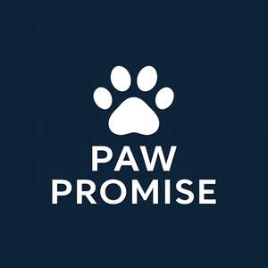

Trade Mark Journal No.2025/048 28 November 2025
UK00004292091 10 November 2025 (20,31,35,44)

- Class 20
- Works of art of plastic; Plastic sculptures; Cold cast resin figurines; Figurines of wood, wax, plaster or plastic; Statuettes of resin; Art (Works of -) of wood, wax, plaster or plastic; Cat trees; Pet furniture; Beds for household pets; Pet cushions; Inflatable pet beds; Cat beds; Dog beds; Pet crates; Portable beds for pets; Non-metal crates for animal transportation; Playpens; Playhouses for pets; Ladders and movable steps, non-metallic; Cat baskets; Scratching posts for cats; Grooming tables for pets; Caskets; Cremation urns; Funerary urns .
- Class 31
- Beverages for animals; Animal foodstuffs; Animal feed; Foodstuffs for animals; Pet food; Dog food; Cat food; Foodstuffs for dogs; Canned foodstuffs for cats; Canned foodstuffs for dogs; Edible pet treats; Cat treats [edible]; Edible dog treats; Edible treats for animals; Pet foods in the form of chews; Beverages for pets; Pet beverages; Beverages for canines; Powdered milk for pets; Powdered milk for animals; Cat litter and litter for small animals; Litter for small animals; Wood shavings for use as animal bedding; Wood shavings for use as animal litter; Foodstuffs for farm animals .
- Class 35
- Providing consumer product information; Advertising and marketing; Promoting the goods and services of others; Advertising services; Advertisement via mobile phone networks; Advertising services relating to the commercialization of new products; Providing business information; Retail services in relation to pet products; Business advice; Providing business efficiency advice; Corporate image development consultation; Providing business information via a web site; Sales management services; Marketing the goods and services of others by distributing coupons; Providing business marketing information; Providing consumer product advice; Providing consumer product recommendations; Website traffic optimization; Search engine optimization; Outsourcing services in the nature of arranging service contracts for others; Outsourcing services in the nature of arranging procurement of goods for others; Online business networking services; Administration of consumer loyalty programs; Maintaining a registry of dog breeds; Marketing the goods and services of others .
- Class 44
- Veterinary services; Pet grooming services; Animal-assisted therapy; Veterinary surgical services; Animal breeding; Pet hospital services; Health screening services in the field of sleep apnea; Therapy services; Physical rehabilitation; Advisory services relating to the care of pet animals; Beauty care for animals; Animal healthcare services; Medical testing for diagnostic or treatment purposes; Veterinary information services provided via the Internet; Veterinary dentistry; Pet bathing services; Grooming salon services for pet animals; Insertion of subcutaneous microchips into pets for purposes of tracking and identification; Stem cell therapy services; Alternative medicine services; Animal healthcare services; Services for the care of pet animals; Medical counseling relating to stress; Chiropractic services for animals; Food nutrition consultation Nutritional advisory services Health counseling .
P&P INTERNATIONAL GROUP LIMITED
Representative: IBE Avocat - Isabelle Bertaux